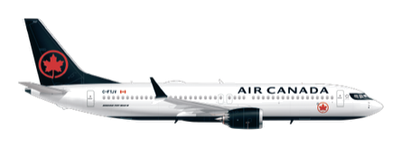

The easy one. You're at your own airport.
- Flight
- AC 262
- Depart
- 12:20
- Arrive
- 15:45
- In the air
- 2h 25m

The Boeing 737 MAX 8. A full-size mainline jet — one of the newest flying — not a little regional plane. One small thing: this one has no screen in the seat-back and no charging plug, so bring a charged phone and a book for the two and a half hours.
Aircraft details ›

- Aircraft
- Boeing 737 MAX 8
- Made by
- Boeing
- Seating
- 3 + 3
- Cruise
- 839 km/h
- Length
- 39.5 m
- Wingspan
- 35.9 m
- Engines
- 2 × CFM LEAP-1B
Free WiFi with movies and shows you can stream to your own phone or tablet — but no seat-back screen and no power outlet, so come with a charged phone and a book.
A comfortable midday start — no early alarm. Winnipeg has one terminal and about twenty gates, so whatever gate you need is a short walk from the front door. There's no rush — get there in good time and sit down with a coffee.
This flight goes to Toronto, which is still Canada. So Winnipeg is just ordinary domestic security — bag on the belt, walk through, done. No passport officers, no customs, no American anything. That part comes later, in Toronto, and this guide walks you through every step of it.
You'll find out your seat when you get to the gate, so you won't know who you're sitting beside until you're on board. Take it as a treat — a long, easy afternoon is the perfect time to meet a new friend or two. Bring your smile.